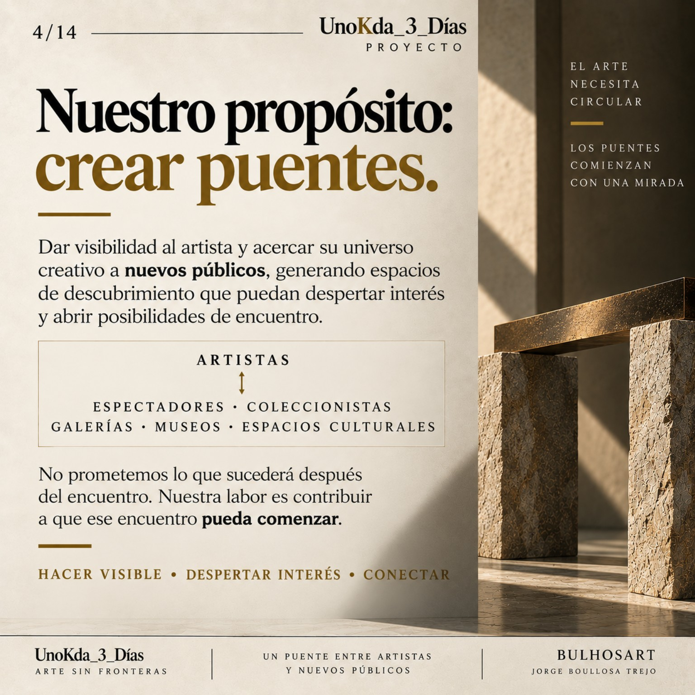

Proyecto de mediación artística digital
Arte contemporáneo,
otra forma de mirar.
Una obra puede detener una mirada y abrir una conversación.
UnoKda_3_Días crea puentes entre artistas y nuevos públicos mediante investigación, edición curatorial y difusión cultural.

01 La obra permanece íntegra
02 Una lectura singular por artista
03 Un puente con nuevos públicos
01 / El proyecto
Una edición pensada para cada artista.
El arte no termina en la obra. La mirada, la palabra y el tiempo que dedicamos a observarla también importan.
UnoKda_3_Días es una iniciativa independiente de difusión y mediación artística digital. Investiga trayectorias, observa las obras y construye publicaciones curatoriales con un lenguaje editorial propio.
La obra conserva su autoría e integridad. El diseño, la investigación y los textos curatoriales constituyen un trabajo editorial diferenciado. No actuamos como galería de representación comercial.
Dirección curatorial y editorial: Jorge Boullosa Trejo · BULHOSART

Archivo editorial · I edición
El arte no necesita pasaporte.
La identidad de UnoKda_3_Días nació del encuentro: artistas, espectadores, territorios y maneras distintas de mirar.
Recuperamos aquí dos láminas originales de nuestro archivo inaugural. Son documentos editoriales del proyecto, presentados sin alterar las imágenes aprobadas.
Explorar el archivo de artistas02 / Archivo de artistas
Obras, trayectorias y procesos.
Las fichas incorporarán exclusivamente obras y materiales cuya publicación esté autorizada y verificada.
El archivo de artistas se incorporará aquí a medida que sus obras y materiales estén revisados y autorizados.
03 / Archivo audiovisual
La mirada en movimiento.
Conversaciones, procesos creativos, presentaciones y piezas audiovisuales.
La videoteca abrirá con vídeos seleccionados y autorizados. Todavía no hay contenidos publicados.
04 / Ediciones curatoriales
Biblioteca y hemeroteca.
Libros de artista, revistas y catálogos para leer con paso de hojas, desde el móvil o el ordenador.
Los libros y catálogos aparecerán aquí cuando sus ediciones digitales estén aprobadas.
05 / Cuaderno curatorial
El arte no termina en la obra.
Una figura, la tensión de una línea o la huella del trabajo sobre la materia pueden hacernos detener. No siempre sabemos por qué. Volver a mirar es también una forma de acercarse al proceso de creación.
Este espacio reunirá observaciones, preguntas y lecturas curatoriales que inviten a mirar sin imponer una única interpretación.
Jorge Boullosa Trejo · BULHOSART
06 / Futuras ediciones
Tu obra puede abrir una conversación.
Estamos preparando la preinscripción gratuita para artistas interesados en futuras ediciones. Conoce el procedimiento y los documentos necesarios. La presentación de una candidatura no constituye una plaza reservada ni implica pago.
Conocer la preinscripción gratuita